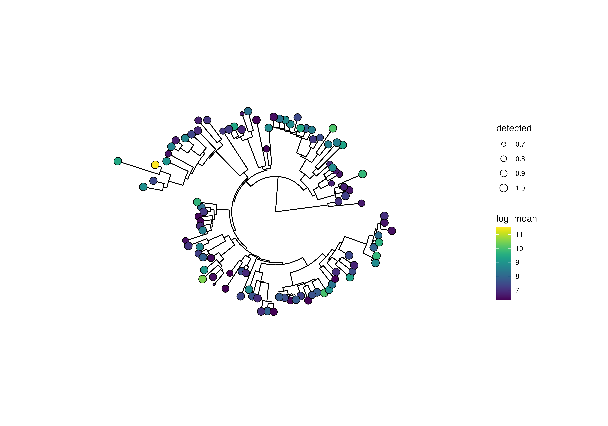
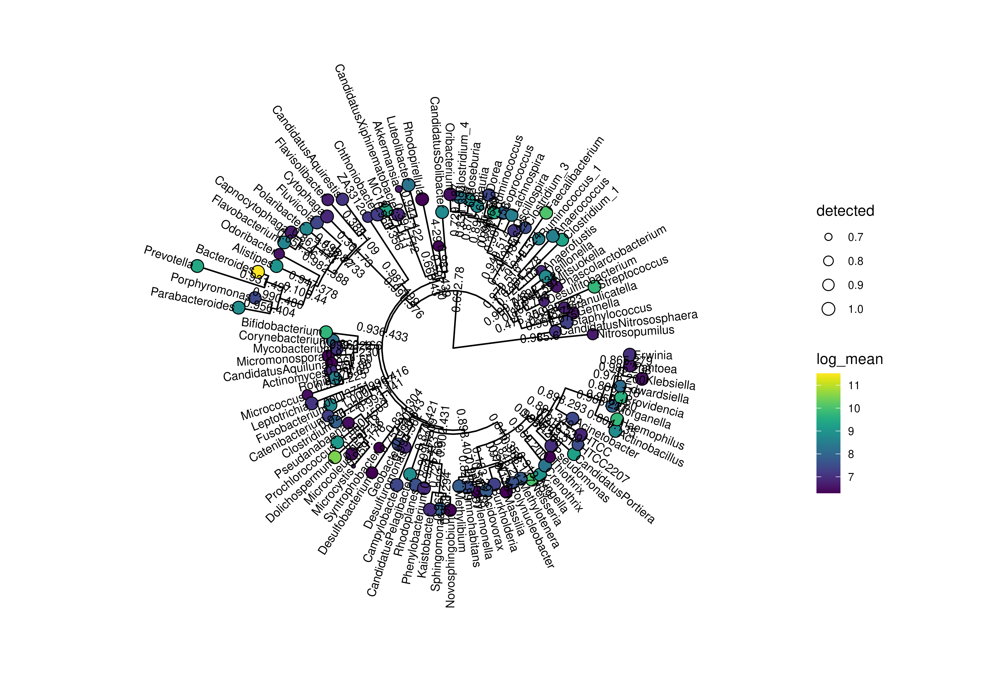
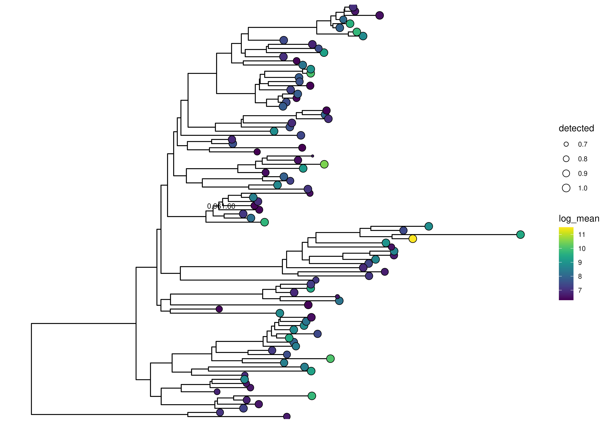
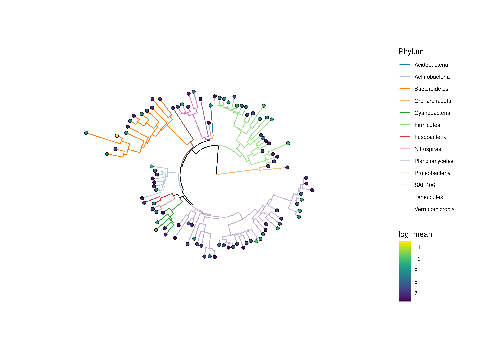
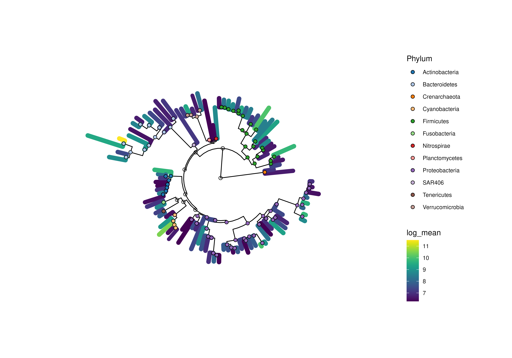
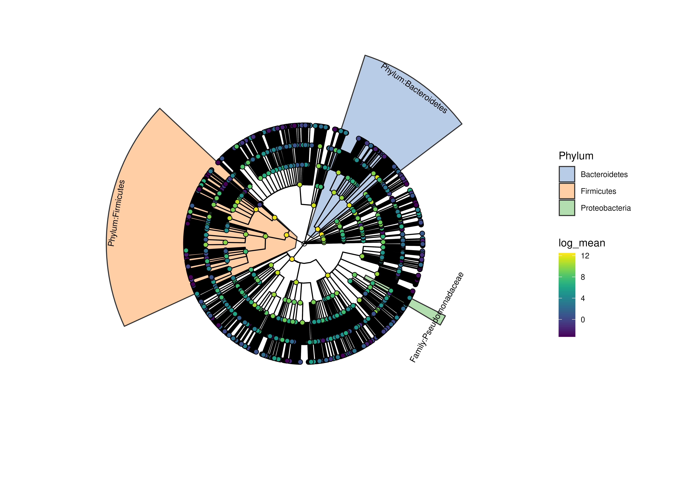
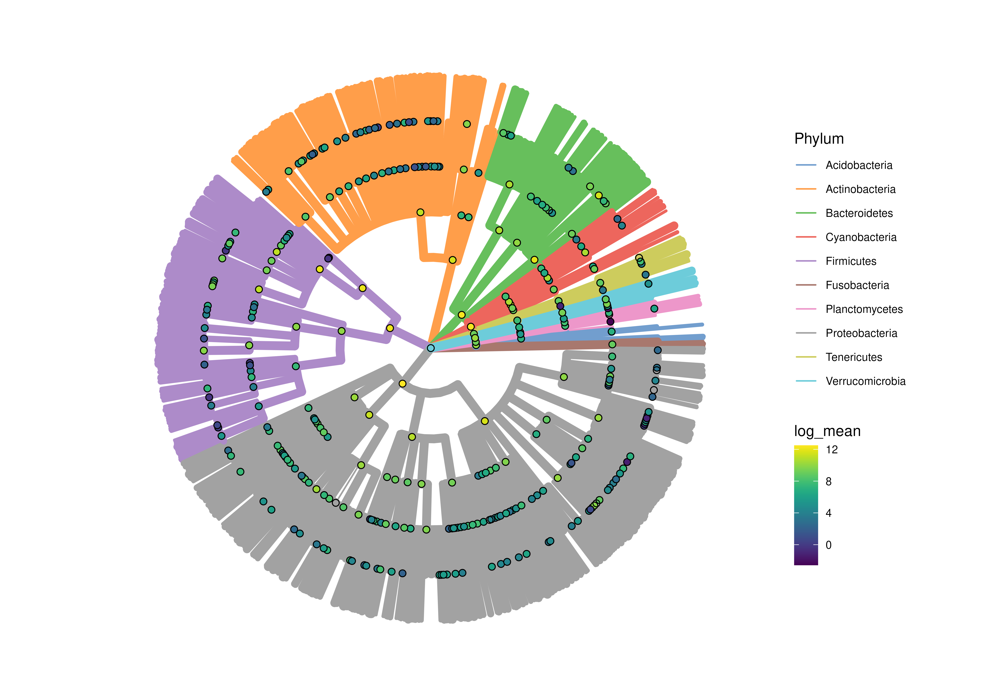

R/AllGenerics.R, R/plotTree.R
plotTree.RdBased on the stored data in a TreeSummarizedExperiment a tree can
be plotted. From the rowData, the assays as well as the
colData information can be taken for enriching the tree plots with
additional information.
plotRowTree(x, ...)
plotColTree(x, ...)
# S4 method for class 'TreeSummarizedExperiment'
plotColTree(x, tree.name = "phylo", ...)
# S4 method for class 'TreeSummarizedExperiment'
plotRowTree(x, tree.name = "phylo", ...)additional arguments for plotting.
layout: layout for the plotted tree. See
ggtree for details.
relabel.tree: Logical scalar. Should the tip labels be
relabelec using the output of
getTaxonomyLabels(x, with_rank = TRUE)? (Default: FALSE)
order.tree: Logical scalar. Should the tree be ordered
based on alphabetic order of taxonomic levels? (Default: FALSE)
levels.rm: Logical scalar. Should taxonomic level
information be removed from labels? (Default: FALSE)
show.label, show.highlights,
show.highlight.label, abbr.label logical vector,
integer vector. or character vector. If a logical
scalar is given, should tip labels be plotted or if a
logical vector is provided, which labels should be shown? If an
integer or character vector is provided, it will be converted
to a logical vector. The integer values must be in the range of 1
and number of nodes, whereas the values of a character vector must
match values of the label column in the node data. In case of a
character vector only values corresponding to actual labels will be
plotted and if no labels are provided no labels will be shown. (Default:
FALSE)
add.legend: Logical scalar. Should legends be plotted?
(Default: TRUE)
edge.colour.by: Character scalar. Specification of a
column metadata field or a feature to colour tree edges by.
(Default: NULL)
edge.size.by: Character scalar. Specification of a
column metadata field or a feature to size tree edges by.
(Default: NULL)
colour.by: Character scalar. Specification of a
column metadata field or a feature to colour tree nodes by.
(Default: NULL)
shape.by: Character scalar. Specification of a
column metadata field or a feature to shape tree nodes by.
(Default: NULL)
size.by: Character scalar. Specification of a
column metadata field or a feature to size tree tips by.
(Default: NULL)
show.tips: Logical scalar. Whether to show
tip points. (Default: FALSE)
show.nodes: Logical scalar. Whether to show
node points. (Default: FALSE)
colour.highlights.by: Logical scalar. Should the
highlights be colour differently? If show.highlights = TRUE,
colour_highlights will be set to TRUE as default.
(Default: FALSE)
assay.type: Character scalar. Specifies which assay to
obtain expression values from, for use in point aesthetics.
(Default: "counts")
other.fields: Character vector. Additional fields to
include in the node information without plotting them.
(Default: NULL)
Character scalar. Specifies a rowTree/colTree from
x. (Default: tree.name = "phylo")
a ggtree plot
If show.label or show.highlight.label have the same length
as the number of nodes, the vector will be used to relabel the nodes.
library(scater)
library(mia)
# preparation of some data
data(GlobalPatterns)
GlobalPatterns <- agglomerateByRanks(GlobalPatterns)
altExp(GlobalPatterns,"Genus") <- addPerFeatureQC(
altExp(GlobalPatterns,"Genus"))
rowData(altExp(GlobalPatterns,"Genus"))$log_mean <- log(
rowData(altExp(GlobalPatterns,"Genus"))$mean)
rowData(altExp(GlobalPatterns,"Genus"))$detected <- rowData(
altExp(GlobalPatterns,"Genus"))$detected / 100
top_genus <- getTop(
altExp(GlobalPatterns,"Genus"),
method = "mean",
top = 100L,
assay.type = "counts"
)
#
x <- altExp(GlobalPatterns,"Genus")
plotRowTree(
x[rownames(x) %in% top_genus,],
tip.colour.by = "log_mean", tip.size.by = "detected"
)

# plot with tip labels
plotRowTree(
x[rownames(x) %in% top_genus,],
tip.colour.by = "log_mean",
tip.size.by = "detected",
show.label = TRUE
)

# plot with selected labels
labels <- c("Genus:Providencia", "Genus:Morganella", "0.961.60")
plotRowTree(
x[rownames(x) %in% top_genus,],
tip.colour.by = "log_mean",
tip.size.by = "detected",
show.label = labels,
layout = "rectangular"
)

# plot with labeled edges
plotRowTree(
x[rownames(x) %in% top_genus,],
edge.colour.by = "Phylum",
tip.colour.by = "log_mean"
)

# if edges are sized, colours might disappear depending on plotting device
plotRowTree(
x[rownames(x) %in% top_genus,],
node.colour.by = "Phylum",
edge.size.by = "detected",
edge.colour.by = "log_mean"
)

# aggregating data over the taxonomic levels for plotting a taxonomic tree
# please note that the original tree of GlobalPatterns is dropped by
# unsplitByRanks
altExps(GlobalPatterns) <- splitByRanks(GlobalPatterns)
top_phyla <- getTop(
altExp(GlobalPatterns,"Phylum"),
method = "mean",
top = 10L,
assay.type="counts"
)
altExps(GlobalPatterns) <- lapply(altExps(GlobalPatterns), addPerFeatureQC)
altExps(GlobalPatterns) <- lapply(
altExps(GlobalPatterns), function(y){
rowData(y)$log_mean <- log(rowData(y)$mean)
rowData(y)$detected <- rowData(y)$detected / 100
return(y)
})
x <- unsplitByRanks(GlobalPatterns)
x <- addHierarchyTree(x)
#> Warning: The root is added with label 'ALL'
highlights <- c(
"Phylum:Firmicutes","Phylum:Bacteroidetes",
"Family:Pseudomonadaceae","Order:Bifidobacteriales")
plotRowTree(
x[rowData(x)$Phylum %in% top_phyla,],
tip.colour.by = "log_mean",
node.colour.by = "log_mean",
show.highlights = highlights,
show.highlight.label = highlights,
colour.highlights.by = "Phylum"
)
#> Warning: some tip numbers were larger than the number of tips: they were ignored
#> Warning: 537 row(s) are dropped due to mismatch with nodes of 'value'

# If you do not want to show internal nodes
plotRowTree(
x[rowData(x)$Phylum %in% top_phyla,],
edge.colour.by = "Phylum",
edge.size.by = "detected",
node.colour.by = "log_mean",
show.nodes = FALSE
)
#> Warning: some tip numbers were larger than the number of tips: they were ignored
#> Warning: 537 row(s) are dropped due to mismatch with nodes of 'value'
